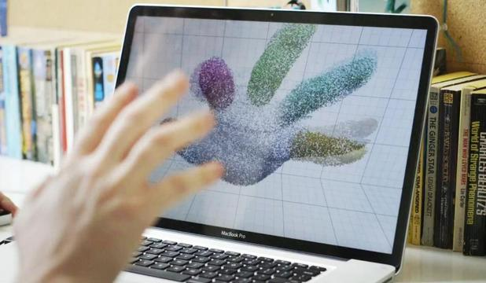
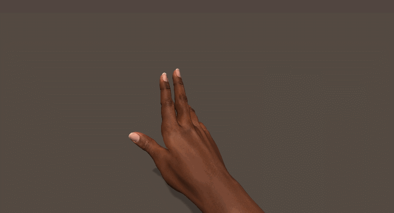
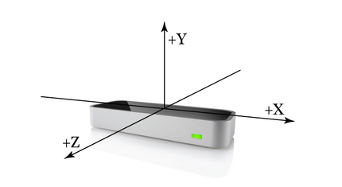
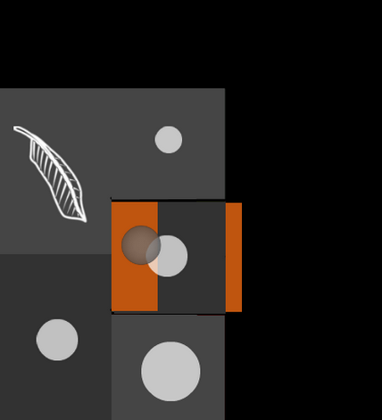
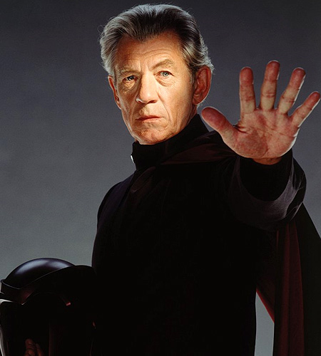

Ninia
Welcome to the presenter console!
Welcome to the presenter console!
Specific Situations
Here you have a view of the current slide, a preview of the next slide and your notes.
Presentation
You also have a clock and a timer, so you know how much time you have left.
Integration
Video, Slides, Canvas, PDF, Image...
If you click on the timer it restarts from zero. This is handy when you are rehearsing the presentation and need to make sure it fits in the time allocated.
Feel the Tech
If you have more notes than fit in the console, you can scroll down, but more handily, you can scroll the text up by pressing space bar.
Leap Motion and Gestures
If there isn't more text to scroll up, space bar will go to the next slide. Therefore you, as a presenter, just press space every time you run out of things to say!
“Intuitive” Interfaces Design
Learnable Understandable Habitual
Zooming is cool. But one day it will grow old as well. What will we do then to make presentations interesting?
Learnable
Avoid teaching people how to use it
It's probably back to making bad jokes again.
Understandable
Mental model
Physical metaphor
Feedback! Feedback! Feedback!
Feed-the-f**king-back!!!
Wow! 3D! You didn't see that one coming, did you?
Menu Design Rethink
Selection
How do I confirm the choice I want?
The endless repositioning of slides is what prompted me to write Hovercraft! in the first place.
Tap?
What would be the point of this slide show if I didn't have a solution?
Duh!
What would be the point of this slide show if I didn't have a solution? Duh!
Marching Menu
TADA!
Navigation
How do I find the choice I want?
Magnito's Style?
That SVG path support was a lot of work. And all I used it for was to position the slides in circles.
Activation
How do I bring up the menu?
You found the presenter console already!
Radial Menu

A slogan: The ad-mans best friend!
Less is more!
Fork and contribute!